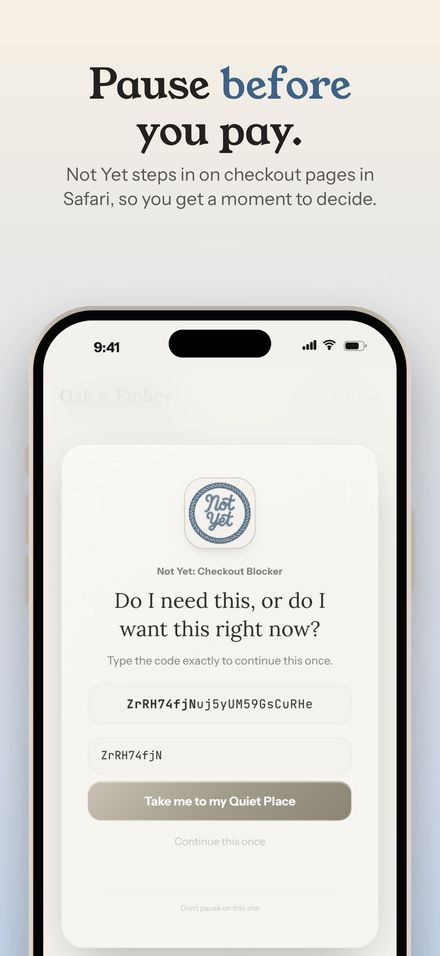
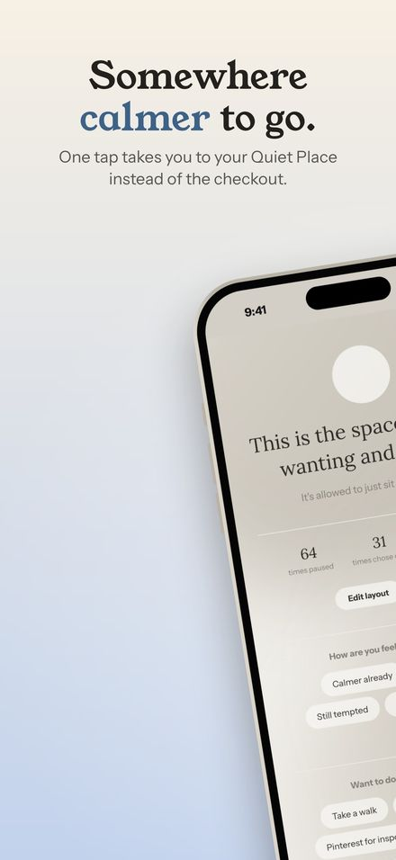
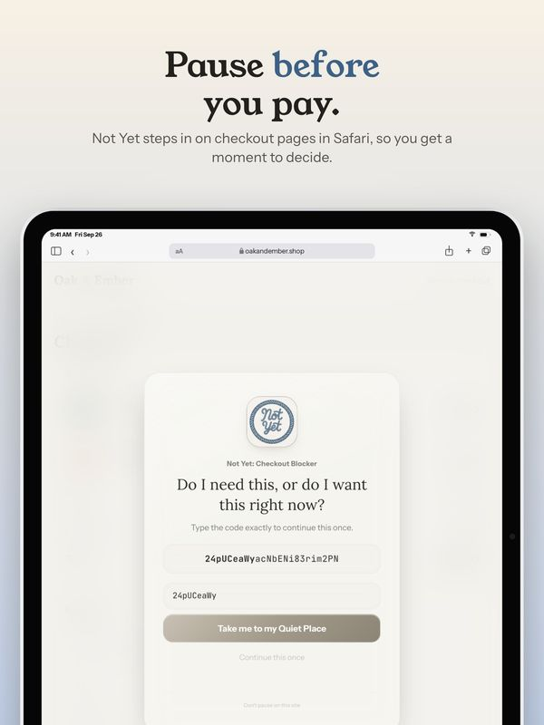
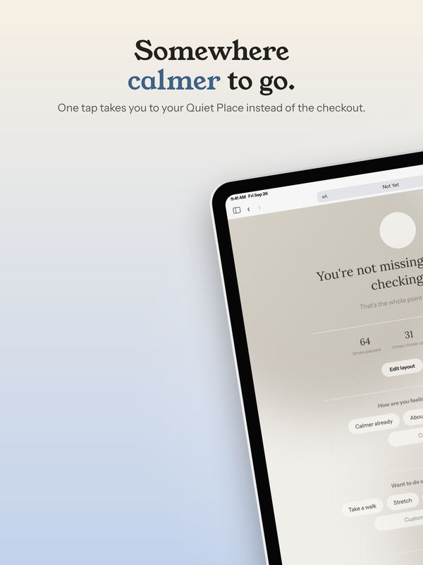
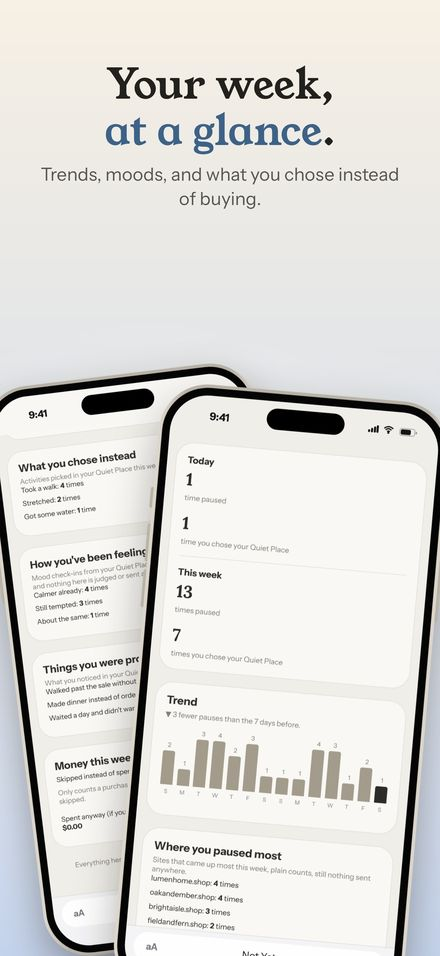

How Not Yet's App Store Screenshots Were Made
Shotstand exists because of another app. Not Yet: Checkout Blocker needed App Store screenshots for iPhone, iPad, and Mac: fifteen of each, forty-five in all, telling the same story on three very different screen shapes. Here's how that set was made.
Start with real screens
Not Yet pauses checkout pages, so its most important screen only appears on a checkout page. Every screen in the set is the real extension running on a made-up demo store, captured at full resolution for each device. Nothing is mocked up in a design tool: what the screenshots show is what the app does.


One story, three devices
Every slide was laid out with Shotstand's engine: a layout, a headline, and a palette taken from Not Yet's own calm theme, soft warm stone with a muted blue for the colored words. The same fifteen ideas run in the same order on iPhone, iPad, and Mac, each with that device's own captures and each layout fitted to that device's shape. In the app, that's what switching sizes does: your words come along and every layout refits, and with Premium, Save every size does all three at once.


Headlines in the app's own voice
Not Yet's copy rules are strict: sentence case, plain words, no dashes, and nothing that shouts. "Pause before you pay." "Somewhere calmer to go." Each headline has one colored word. In Shotstand that's the *stars* rule: wrap a word in stars and it takes the accent color, with no separate style to set on every slide.
Checking forty-five screenshots
With forty-five screenshots, small problems hide easily: a headline that wraps one word too far on the Mac, a screenshot shown a little bigger than its capture. That's what Shotstand's export checks are for. They look at every slide before you save and point out text off the edge, a headline too long for search results, or a screenshot that would look soft.


Made once, reused everywhere
The finished screenshots are also the pictures on the Not Yet homepage and in its blog. Shotstand's own App Store screenshots came out of the same engine, and so does the live demo on the Shotstand page, which runs the app's real drawing code in your browser.
See the finished set on the Not Yet homepage, or the story behind each Not Yet screen in Not Yet, screen by screen.